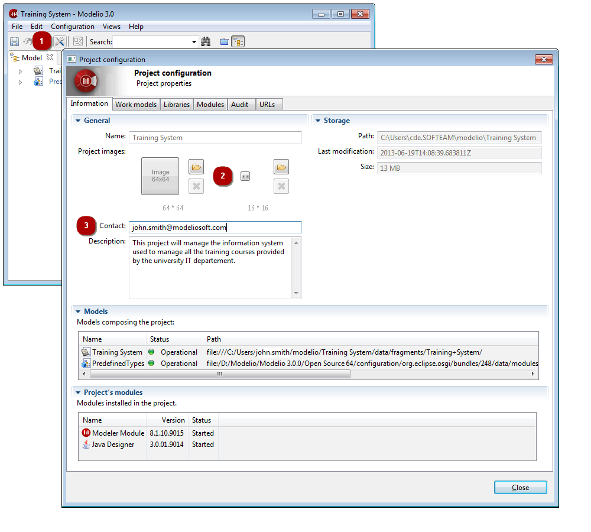

] icon. Select the Information tab in the dialog.
] icon. Select the Information tab in the dialog.Each project can be customized in order to be more easily identifiable in the workspace view.
This customization is carried out in the Information tab of the Project configurator dialog.

] icon. Select the Information tab in the dialog.The 16x16 icon will be used for the project in the workspace browser.
The 64x64 image will appear on the project information page along with the contact and description.